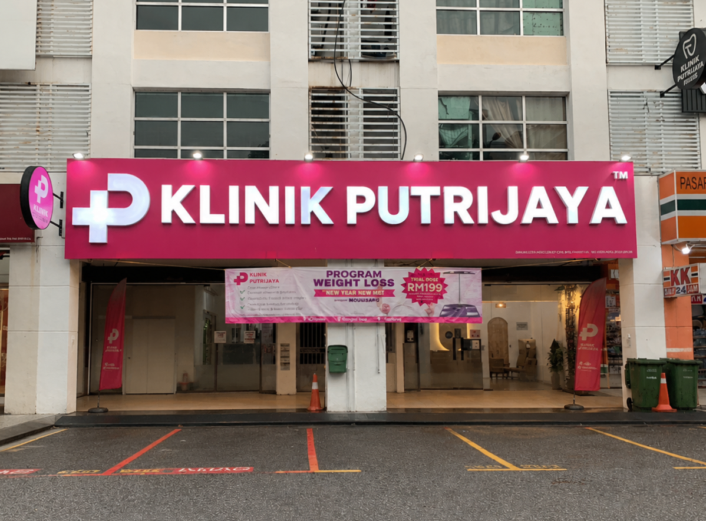
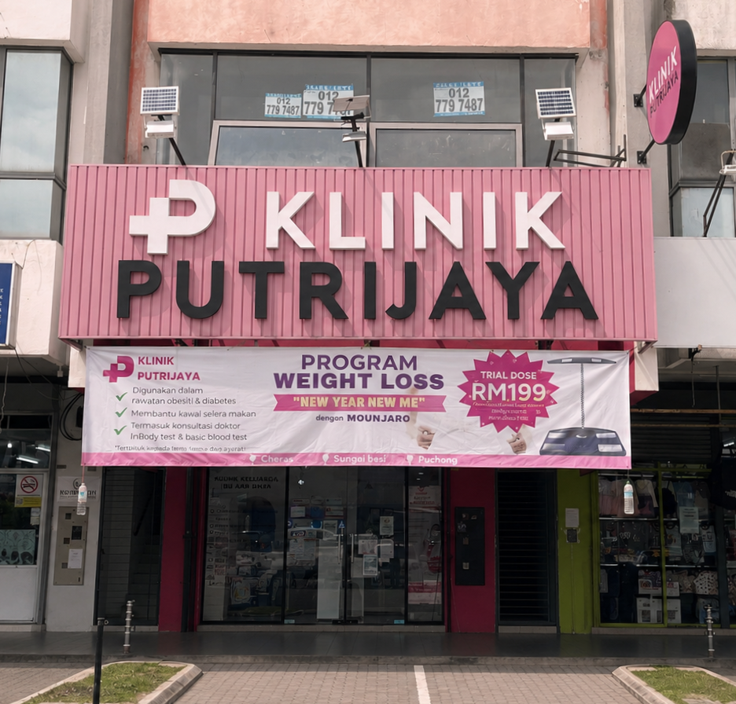
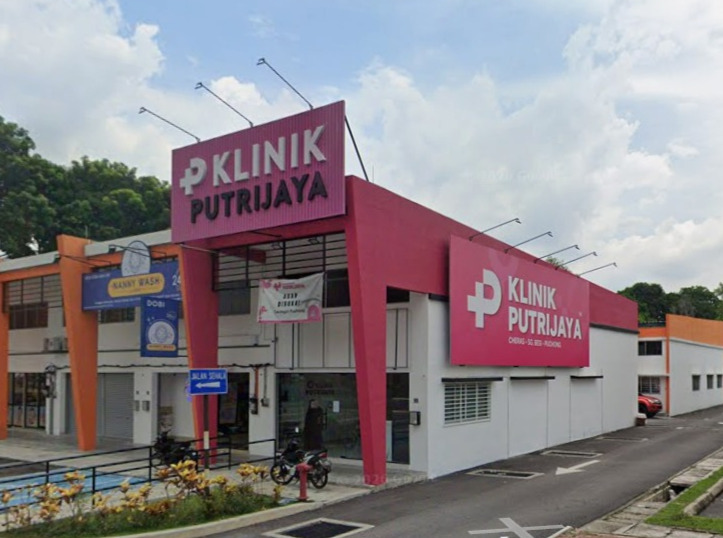

Vision — B.E.S.T
To be the B.E.S.T family clinic for the community.
- B — Bold
- E — Energetic
- S — Strategic
- T — Trusted

Established in 2020, Klinik Putrijaya has grown from one neighbourhood clinic into a family clinic group serving three Klang Valley communities.
Klinik Putrijaya is a proudly Bumiputera-owned clinic group established in 2020. We provide comprehensive family and general medical care, with a strong foundation in women’s health, antenatal care, child health and community-based primary care.
Our first clinic opened in Dataran Dwitasik, Cheras. As the community grew to trust our patient-centred approach, Klinik Putrijaya expanded to Sungai Besi and Puchong in 2024. Our motto, Health Meets HOPE, reflects our aim to make each patient feel informed, supported and cared for.
Our service culture is guided by the P.I.N.K Glove Protocol and the PUTRI code of conduct.
To be the B.E.S.T family clinic for the community.
To pamper our communities with attentive, knowledgeable and practical healthcare.
How our people work together and serve patients every day.
Safe, compassionate and patient-centred care, supported by qualified doctors and a team that values clear communication, practical recommendations and continuity of care.


